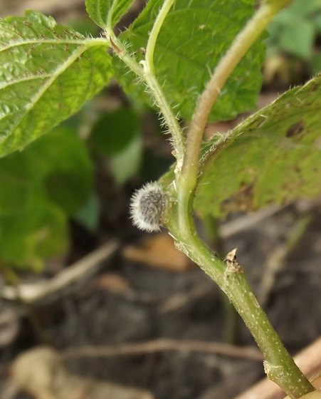
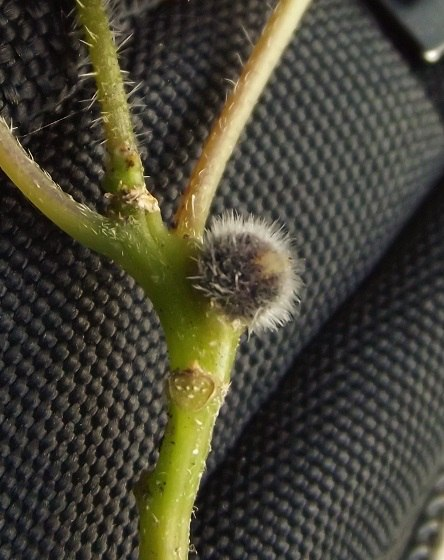
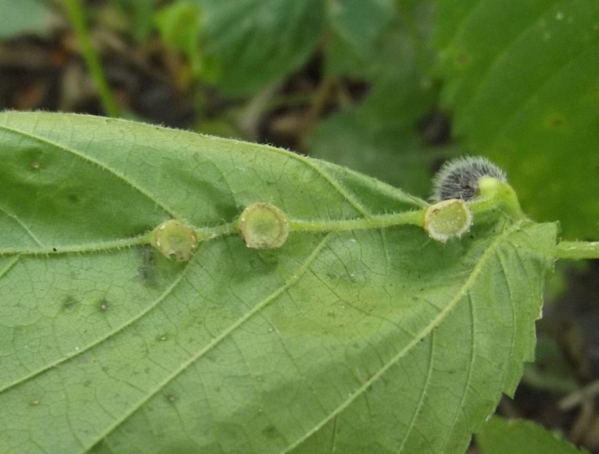
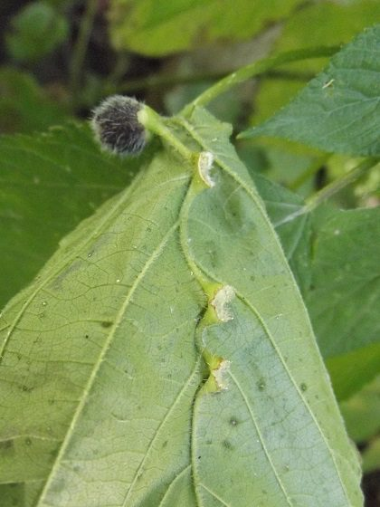
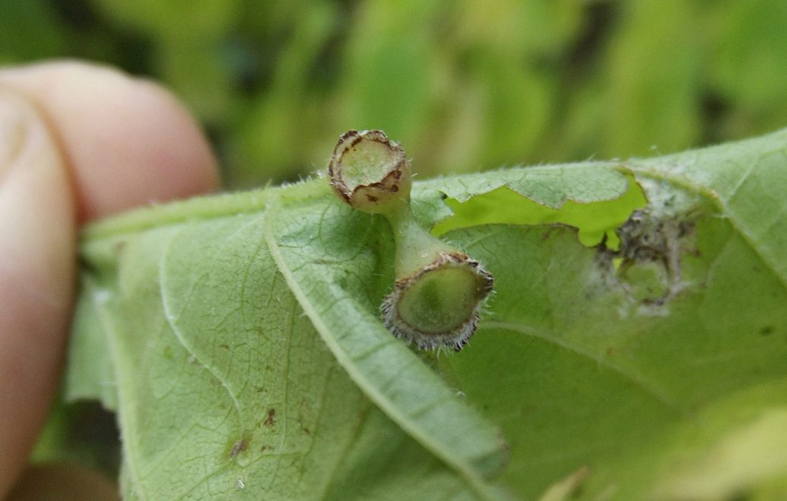
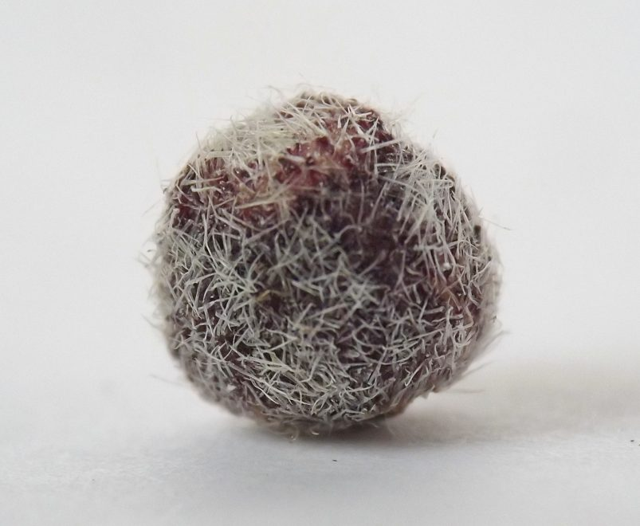
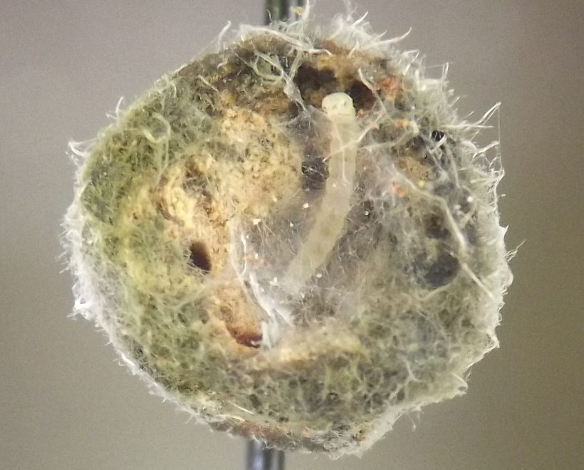

Local feeder (Diptera: Cecidomyiidae) in petioles of Laportea
| Record no.: | 0305 |
|---|---|
| Feeding guild: | Local feeder in petiole |
| Taxonomy: | Diptera: Cecidomyiidae: Dasineura pilosa |
| Stages observed: | trace, larva |
| Distribution observed: | IA |
| Hosts in Laportea: | L. canadensis (wood nettle) |
I observed several of these spherical, hairy, reddish-purple galls on stems, midribs, and petioles of the host in autumn. Many of the midrib galls had already dropped to the ground by the time I observed the affected plants in early September, leaving behind a cup-shaped receptacle, while the stem galls were still attached via a less prominent receptacle. In winter, these receptacles may even be observed on petioles that remain attached to the dead stems.
One of the stem galls I observed in early September was perforated by a large, smooth-edged hole, evidently the work of an unidentified predator, and the cecidomyiid larva was absent. Another gall was also missing its cecidomyiid inhabitant, but in the cecidomyiid's place was a small, pale greenish-yellow Lepidoptera larva, which appeared to have tunneled through the gall and scraped away some of the tissue from its inner walls. The larva had spun some white silk webbing in the hollow gall interior. It looked rather like a tortricid to me, but this was by no means a certain identification.

 Prev
Prev





{kind=link}
{kind=link}
{kind=link}
{kind=link}
{kind=link}
{kind=link}

{kind=link}

Page created: April 8, 2026. Last update: none